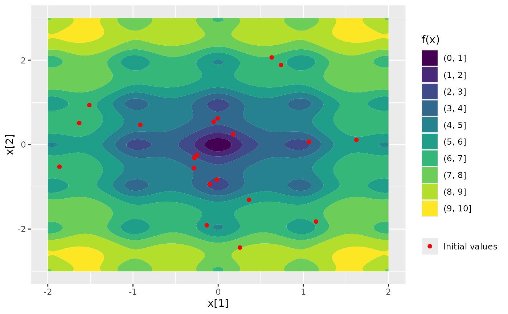

A Nop object defines a numerical optimization problem.
Getting started
Step 1: Create a Nop object
Call object <- Nop$new(f, target, npar, ...) where
fis the objective function,targetare the names of the target arguments,nparspecifies the lengths of the target arguments,and
...are additional arguments forf.
You can now evaluate the objective function via the $evaluate() method.
Step 2: Specify numerical optimizers
Call object$set_optimizer(<optimizer object>), where
<optimizer object> is an object of class optimizer, which can
be created via the {optimizeR} package (please refer to
the package homepage for details).
For example,
Step 3: Select initial values
Call initialization methods to define starting values for the optimization, for example:
object$initialize_fixed()for fixed initial values,object$initialize_random()for random initial values,object$initialize_continue()for initial values based on parameter estimates from previous optimization runs.
Progress during optimization
Displaying progress during multiple optimization runs via the
{progressr} package is supported. To get started, run
progressr::handlers(global = TRUE)and see handlers for details.
Parallel optimization
Parallel computation of multiple optimization runs via the {future}
package is supported. To get started, run one of
future::plan(future::multisession)and see plan for details.
Active bindings
initial_values[
list(), read-only]
The currently defined initial values.Use the
initialize_*()methods to add, transform, and reset values.results[
tibble, read-only]
Optimization results with identifiers:".optimization_label"(identifies the optimization run)".optimizer_label"(identifies the optimizer)".direction"(identifies the optimization direction)".original"(identifies results obtained on the original problem)
The output has an associated
autoplotmethod.minimum[
list(2), read-only]
Best value and parameter across all (original) minimizations.maximum[
list(2), read-only]
Best value and parameter across all (original) maximizations.npar[
integer(), read-only]
The length of each target argument.verbose[
logical(1)]
Print progress and details?fresh_label[
character(1), read-only]
An optimization label that has not been used yet.
Methods
Method new()
Creates a new Nop object.
The output has an associated autoplot method.
Usage
Nop$new(f, target = NULL, npar, gradient = NULL, hessian = NULL, ...)Arguments
f[
function]
Afunctionto be optimized (the so-called objective function).It is expected that
fhas at least onenumericargument,the return value of
fis of the structurenumeric(1).
target[
character()]
The argument name(s) that get optimized (the so-called target arguments).All target arguments must be
numeric.Can be
NULL(default), then the first function argument is selected.npar[
integer()]
The length of each target argument, i.e., the length(s) of the argument(s) specified viatarget.gradient[
function|NULL]
Optionally afunctionthat returns the gradient off.The function call of
gradientmust be identical tof.Ignored for optimizers that do not support user-supplied gradient.
hessian[
function|NULL]
Optionally afunctionthat returns the Hessian off.The function call of
hessianmust be identical tof.Ignored for optimizers that do not support user-supplied Hessian.
...Optionally additional function arguments passed to
f(andgradientandhessian, if specified) that are fixed during the optimization.
Method fixed_argument()
Manages fixed arguments for the objective function.
Arguments
action[
character(1)]
One of:"set"to set an argument,"get"to extract an argument value,"remove"to remove an argument,"reset"to reset an argument to its original value,"modify"to modify an argument value.
Note that
"set"overrides an argument value, while"modify"preserves the original value, which can be recovered via"reset"....Additional parameters depending on
action:named arguments if
action = "set"or"modify",a single argument name if
action = "get","remove", or"reset".
Method reduce_argument()
Reduces a fixed argument for the objective function.
Usage
Nop$reduce_argument(
argument_name,
proportion = 0.5,
how = "random",
centers = 2L,
byrow = TRUE,
ignore = integer()
)Arguments
argument_name[
character(1)]
The name of a fixed argument for the objective function.proportion, how, centers, byrow, ignorePassed on to
portion.
Method standardize_argument()
Standardizes a fixed argument for the objective function.
Arguments
argument_name[
character(1)]
The name of a fixed argument for the objective function.center, scale, byrow, ignore, jointlyPassed on to
normalize.
Method print()
Prints details of the Nop object.
Method evaluate()
Evaluates the objective function.
Arguments
at[
numeric()]
The values for the target argument(s), written in a single vector.Must be of length
sum(self$npar)..gradient_as_attribute, .hessian_as_attribute[
logical(1)]
Add gradient and / or Hessian value as attributes?If gradient and / or Hessian function is not specified, numerical approximation is used.
Method set_optimizer()
Specifies a numerical optimizer.
Arguments
optimizer[
Optimizer]
AnOptimizerobject, which can be created viaOptimizer.optimizer_label[
character(1)]
A (unique) label for the optimizer.
Method initialize_fixed()
Defines fixed initial values for the optimization.
Arguments
at[
integer(self$sum(npar))|list()]
The fixed initial parameter vector.It can also be a
listof such vectors.
Method initialize_grid()
Defines a grid of initial values for the optimization.
Arguments
lower, upper[
numeric(1)|numeric(self$sum(npar))]
Lower and upper grid bounds for each parameter dimension.breaks[
integer(1)|integer(self$sum(npar))]
The number of breaks for each parameter dimension.jitterAdd noise to the grid points for a random grid layout?
...Optional parameters passed to
jitter.
Method initialize_custom()
Defines custom initial values for the optimization.
Arguments
at[
list()]
Alistof initial parameter vectors.seconds[
numeric(length(at))]
The number of seconds it took to obtain each initial value inat, which is added to the overall optimization time.type[
character(1)]
The type of the initial values.
Method initialize_filter()
Filters initial values from the defined initial values.
Arguments
condition[
character(1)]
Defines the condition on which the initial values are filtered, one of:"gradient_negativefor points where the gradient is negative,"gradient_positivefor points where the gradient is negative,"hessian_negative"for points where the Hessian is negative definite,"hessian_positive"for points where the Hessian is positive definite.
Method initialize_promising()
Selects promising initial values from the defined initial values.
Arguments
proportion[
numeric(1)]
The proportion of selected from the defined initial values.condition[
character(1)]
Defines the condition on which the initial values are selected, one of:"value_small"for points where the function value is smallest,"value_large"for points where the function value is largest,"gradient_small"for points where the gradient norm is smallest,"gradient_large"for points where the gradient norm is largest,"condition_small"for points where the Hessian condition is smallest,"condition_large"for points where the Hessian condition is largest.
Method initialize_transform()
Transforms the currently defined initial values.
Arguments
transformer[
function()]
Afunctionthat receives and returns anumeric()of lengthsum(self$npar).
Method optimize()
Optimizes the target function.
Usage
Nop$optimize(
optimization_label = self$fresh_label,
which_optimizer = "all",
which_direction = "min",
lower = NULL,
upper = NULL,
seconds = Inf,
hide_warnings = TRUE,
reset_initial_afterwards = TRUE
)Arguments
optimization_label[
character(1)]
A label for the optimization to distinguish optimization runs.Setting a label is useful when using the
$initialize_continue()method.which_optimizer[
character()|integer()]
Selects numerical optimizers. Either:"all"for all specified optimizers,specific optimizer labels,
specified optimizer ids as defined in the
print()output.
which_direction[
character()]
Selects the direction of optimization. One or both of:"min"for minimization,"max"for maximization.
lower, upper[
numeric()|NULL]
Optionally lower and upper parameter bounds.Ignored for optimizers that do not support parameter bounds.
seconds[
numeric(1)]
A time limit in seconds.Optimization is interrupted prematurely if
secondsis exceeded.Note the limitations documented in
setTimeLimit.hide_warnings[
logical(1)]
Hide any warnings during optimization?reset_initial_afterwards[
logical(1)]
Reset the initial values after the optimization?
Method optima()
Lists all identified optima.
The output has an associated autoplot method.
Usage
Nop$optima(
which_direction = "min",
only_original = TRUE,
group_by = NULL,
sort_by_value = FALSE,
digits = getOption("digits", default = 7)
)Arguments
which_direction[
character()]
Selects the direction of optimization. One or both of:"min"for minimization,"max"for maximization.
only_original[`logical(1)]
Include only optima obtained on the original problem?group_by[`character(1)]
Selects how the output is grouped. Either:NULLto not group,"optimization"to group by optimization label,`"optimizer"“ to group by optimizer label.
sort_by_value[`logical(1)]
Sort by value? Else, sort by frequency.digits[`integer(1)]
The number of decimal places.
Method deviation()
Compute deviations with respect to a reference parameter.
The output has an associated autoplot method.
Arguments
reference[
numeric()]
The reference vector of lengthsum(self$npar).which_element[`character(1)]
Either"initial"for deviations with respect to the initial values, or"parameter"for deviations with respect to the estimated parameters.
which_direction[
character()]
Selects the direction of optimization. One or both of:"min"for minimization,"max"for maximization.
which_optimizer[
character()|integer()]
Selects numerical optimizers. Either:"all"for all specified optimizers,specific optimizer labels,
specified optimizer ids as defined in the
print()output.
only_original[`logical(1)]
Include only optima obtained on the original problem?parameter_labels[
character()]
Labels for the parameters of lengthsum(self$npar).
Examples
### define objective function, optimizer and initial values
Nop_ackley <- Nop$new(f = TestFunctions::TF_ackley, npar = 2)$
set_optimizer(optimizeR::Optimizer$new(which = "stats::nlm"))$
initialize_random(runs = 20)
### plot function surface and initial values
Nop_ackley |> ggplot2::autoplot()

### minimize objective function
Nop_ackley$optimize(which_direction = "min")
### show optima
Nop_ackley$optima(digits = 0)
#> # A tibble: 3 × 2
#> value n
#> * <dbl> <int>
#> 1 0 8
#> 2 3 6
#> 3 5 6
### show best value and parameter across all minimizations
Nop_ackley$minimum
#> $value
#> [1] 4.10729e-07
#>
#> $parameter
#> [1] -1.395097e-07 -4.030215e-08
#>